Menu
-
I) ALBERT EINSTEIN PROVIDED EMPIRICAL EVIDENCE FOR THE ATOMIC THEORY
II) HE ENABLED THE DETERMINATION OF AVOGADRO’S NUMBER AND THEREFORE THE SIZE OF MOLECULES
III) EINSTEIN SOLVED THE RIDDLE OF THE PHOTOELECTRIC EFFECT
IV) HE PROPOSED THE SPECIAL THEORY OF RELATIVITY
V) EINSTEIN CAME UP WITH THE CONCEPT OF REST ENERGY THROUGH HIS FAMOUS EQUATION
VI) HE PROPOSED THE GENERAL THEORY OF RELATIVITY
VII) HE COLLABORATED WITH BOSE TO PREDICT THE EXISTENCE OF BOSE–EINSTEIN CONDENSATE
VIII) HIS DEBATES WITH NIELS BOHR BROUGHT QUANTUM MECHANICS IN FOCUS
IX) ALBERT EINSTEIN WAS AWARDED THE NOBEL PRIZE IN PHYSICS IN 1921
X) HIS WORK HAD PROFOUND AND FAR REACHING IMPLICATIONS
10 MAJOR ACCOMPLISHMENTS OF ALBERT EINSTEIN
Albert Einstein contributed, perhaps more than any man in history, in the development of our world. His four Annus Mirabilis (‘miracle year’) papers, which were released in 1905, laid the foundation of modern physics and changed views on space, time, mass, and energy. Here are 10 major accomplishments of the great scientist.
#1 ALBERT EINSTEIN PROVIDED EMPIRICAL EVIDENCE FOR THE ATOMIC THEORY
In 1827, Robert Brown observed pollen grains in water through a microscope and found that they
moved through water but was not able to determine the mechanisms that caused this motion. In 1905,
Albert Einstein published a paper on this random motion of particles in a fluid, known as Brownian motion.
Einstein explained in precise detail how the motion that Brown had observed was a result of the pollen being
moved by individual water molecules. Though atoms and molecules had long been theorized by scientists, Einstein’s
explanation of Brownian motion served as definitive confirmation that atoms and molecules actually exist.
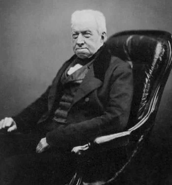
Robert Brown – who first observed Brownian motion
In 1827, Robert Brown observed pollen grains in water through a microscope and found that they
moved through water but was not able to determine the mechanisms that caused this motion. In 1905,
Albert Einstein published a paper on this random motion of particles in a fluid, known as Brownian motion.
Einstein explained in precise detail how the motion that Brown had observed was a result of the pollen being
moved by individual water molecules. Though atoms and molecules had long been theorized by scientists, Einstein’s
explanation of Brownian motion served as definitive confirmation that atoms and molecules actually exist.
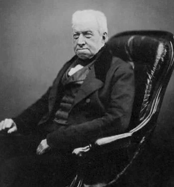
Robert Brown – who first observed Brownian motion
#2 HE ENABLED THE DETERMINATION OF AVOGADRO’S NUMBER AND THEREFORE THE SIZE OF MOLECULES
During his explanation of Brownian motion, Einstein determined the size of atoms, and how many atoms there are in a mole.
He enabled the experimental determination of Avogadro’s number and therefore the size of molecules. Einstein’s statistical
discussion of atomic behavior gave experimentalists a way to count atoms by looking through an ordinary microscope.
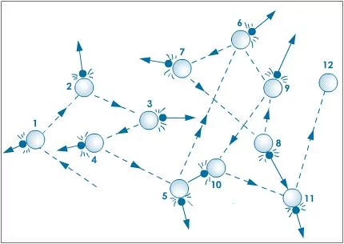
A Diagram of Brownian Motion
During his explanation of Brownian motion, Einstein determined the size of atoms, and how many atoms there are in a mole.
He enabled the experimental determination of Avogadro’s number and therefore the size of molecules. Einstein’s statistical
discussion of atomic behavior gave experimentalists a way to count atoms by looking through an ordinary microscope.
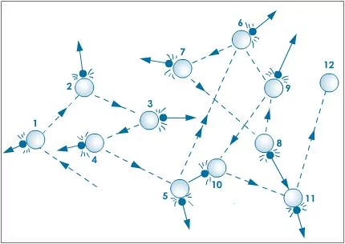
A Diagram of Brownian Motion
#3 EINSTEIN SOLVED THE RIDDLE OF THE PHOTOELECTRIC EFFECT
Photoelectric Effect is the emissions of electrons from a metal when light shines on it.
Scientists were puzzled with this effect as it couldn’t be explained with Maxwell’s wave theory of light.
In his revolutionary paper, released on June 9, 1905, Einstein challenged the wave theory of light and suggested that
light could also be regarded as a collection of discrete energy packets (photons).
Initially Einstein’s particle theory of light was universally rejected by physicists until it was experimentally verified
by Robert A. Millikan about a decade later. Einstein’s discovery was pivotal in establishing the field of quantum mechanics.
Quantum mechanics in turn explained many features of our universe and is used a great deal in modern technological inventions.
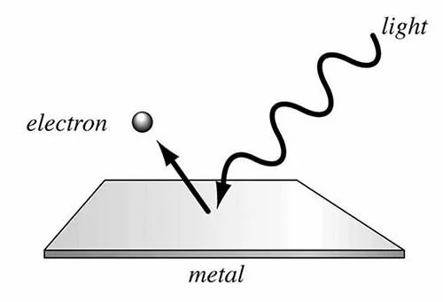
A Diagram demonstrating Photoelectric Effect
Photoelectric Effect is the emissions of electrons from a metal when light shines on it.
Scientists were puzzled with this effect as it couldn’t be explained with Maxwell’s wave theory of light.
In his revolutionary paper, released on June 9, 1905, Einstein challenged the wave theory of light and suggested that
light could also be regarded as a collection of discrete energy packets (photons).
Initially Einstein’s particle theory of light was universally rejected by physicists until it was experimentally verified
by Robert A. Millikan about a decade later. Einstein’s discovery was pivotal in establishing the field of quantum mechanics.
Quantum mechanics in turn explained many features of our universe and is used a great deal in modern technological inventions.
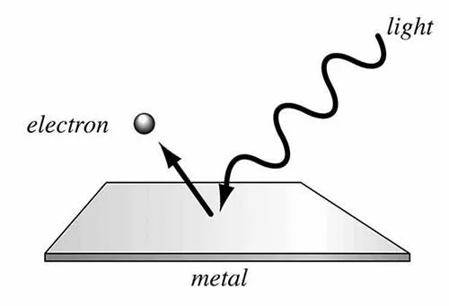
A Diagram demonstrating Photoelectric Effect
#4 HE PROPOSED THE SPECIAL THEORY OF RELATIVITY
The inconsistencies of Newtonian mechanics with Maxwell’s equations of electromagnetism led Einstein to write his legendary
paper ‘On the Electrodynamics of Moving Bodies‘ which was published on September 26, 1905. Einstein proposed major changes
to mechanics while handling situations close to the speed of light. This later became known as Einstein’s special theory of
relativity. It was supported by confirmatory experimental evidence and soon gained widespread acceptance. As of today,
special relativity is the most accurate model of motion at any speed.
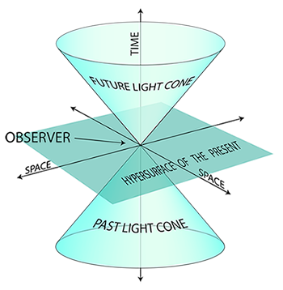
A diagrammatic representation of spacetime which was introduced in Special theory of Relativity
The inconsistencies of Newtonian mechanics with Maxwell’s equations of electromagnetism led Einstein to write his legendary
paper ‘On the Electrodynamics of Moving Bodies‘ which was published on September 26, 1905. Einstein proposed major changes
to mechanics while handling situations close to the speed of light. This later became known as Einstein’s special theory of
relativity. It was supported by confirmatory experimental evidence and soon gained widespread acceptance. As of today,
special relativity is the most accurate model of motion at any speed.
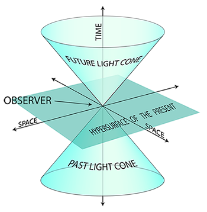
A diagrammatic representation of spacetime which was introduced in Special theory of Relativity
#5 EINSTEIN CAME UP WITH THE CONCEPT OF REST ENERGY THROUGH HIS FAMOUS EQUATION
In relation to his theory of special relativity, Albert Einstein predicted the equivalence of mass (m) and energy (E)
through his famous mass–energy equivalence formula E=mc2, where c is the speed of light in vacuum. This was of paramount
importance because it showed that a particle possesses an energy called the “rest energy”, distinct from its classical
kinetic and potential energies. It implied that gravity had the ability to bend light and could be used to calculate the
amount of energy released or consumed during nuclear reactions.
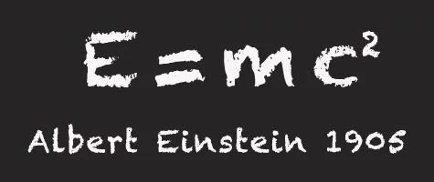
Perhaps the most famous scientific formula
In relation to his theory of special relativity, Albert Einstein predicted the equivalence of mass (m) and energy (E)
through his famous mass–energy equivalence formula E=mc2, where c is the speed of light in vacuum. This was of paramount
importance because it showed that a particle possesses an energy called the “rest energy”, distinct from its classical
kinetic and potential energies. It implied that gravity had the ability to bend light and could be used to calculate the
amount of energy released or consumed during nuclear reactions.
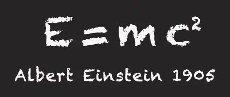
Perhaps the most famous scientific formula
#6 HE PROPOSED THE GENERAL THEORY OF RELATIVITY
In 1916 Einstein published his general theory of relativity, which generalizes special relativity and Newton’s
law of universal gravitation, providing a unified description of gravity as a geometric property of space and time,
or spacetime. General relativity helped to model the large-scale structure of the universe and its predictions have
been confirmed in all observations and experiments to date. It has developed into an essential tool in modern astrophysics
providing understanding of phenomena like black holes and gravitational lensing.
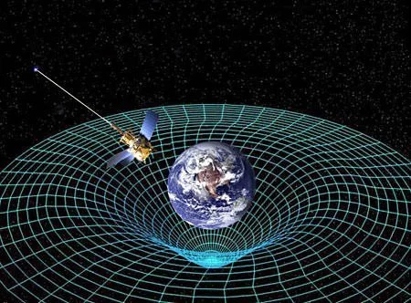
2D projection of a 3D analogy of spacetime curvature described in general relativity
In 1916 Einstein published his general theory of relativity, which generalizes special relativity and Newton’s
law of universal gravitation, providing a unified description of gravity as a geometric property of space and time,
or spacetime. General relativity helped to model the large-scale structure of the universe and its predictions have
been confirmed in all observations and experiments to date. It has developed into an essential tool in modern astrophysics
providing understanding of phenomena like black holes and gravitational lensing.
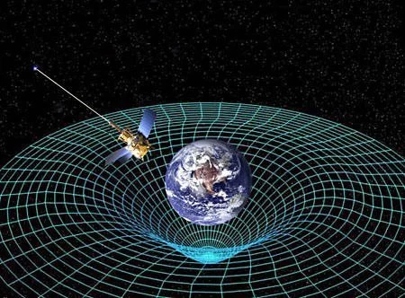
2D projection of a 3D analogy of spacetime curvature described in general relativity
#7 HE COLLABORATED WITH BOSE TO PREDICT THE EXISTENCE OF BOSE–EINSTEIN CONDENSATE
In 1924, Einstein received a paper from Indian physicist Satyendra Nath Bose on a counting method that assumed
that light could be understood as a gas of indistinguishable particles. Einstein submitted the German translation
of the paper to a journal. In collaboration with Bose, Einstein extended the idea to atoms and this led to the prediction
of the existence of phenomena which became known as Bose–Einstein condensate. It was not until 1995 that the first
such condensate was produced experimentally.
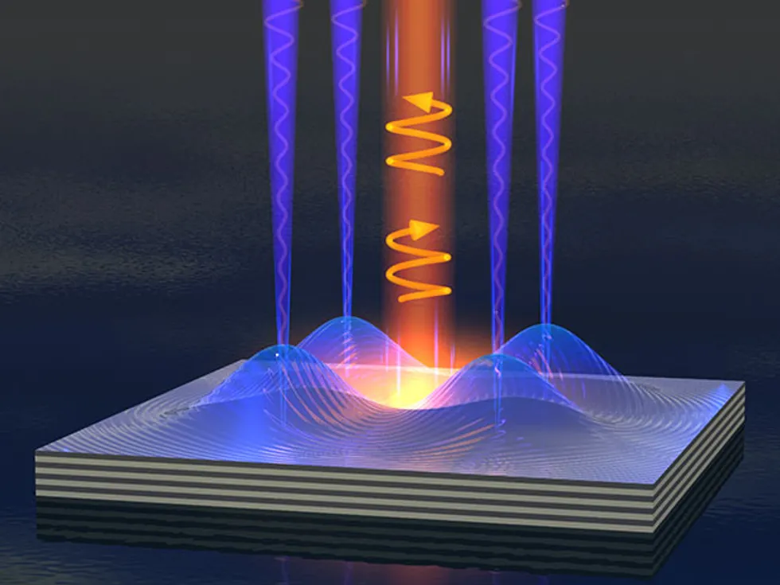
The existence of Bose
In 1924, Einstein received a paper from Indian physicist Satyendra Nath Bose on a counting method that assumed
that light could be understood as a gas of indistinguishable particles. Einstein submitted the German translation
of the paper to a journal. In collaboration with Bose, Einstein extended the idea to atoms and this led to the prediction
of the existence of phenomena which became known as Bose–Einstein condensate. It was not until 1995 that the first
such condensate was produced experimentally.
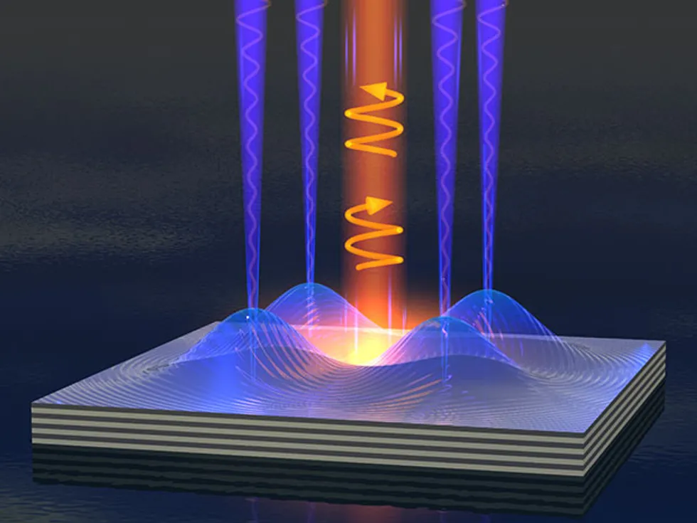
The existence of Bose
#8 HIS DEBATES WITH NIELS BOHR BROUGHT QUANTUM MECHANICS IN FOCUS
Albert Einstein and Niels Bohr were involved in a series of public debates about quantum mechanics.
These debates are remembered as they are considered important to the philosophy of science. They not only represented
one of the highest points of scientific research in the first half of the twentieth century but they also brought to
focus an element of quantum theory, namely quantum non-locality, which is absolutely essential in our modern
understanding of the physical world.
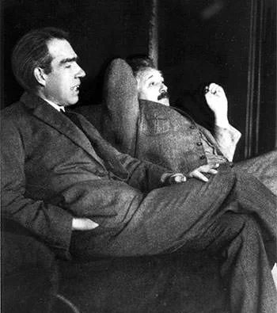
Niels Bohr (left) with Albert Einstein
Albert Einstein and Niels Bohr were involved in a series of public debates about quantum mechanics.
These debates are remembered as they are considered important to the philosophy of science. They not only represented
one of the highest points of scientific research in the first half of the twentieth century but they also brought to
focus an element of quantum theory, namely quantum non-locality, which is absolutely essential in our modern
understanding of the physical world.
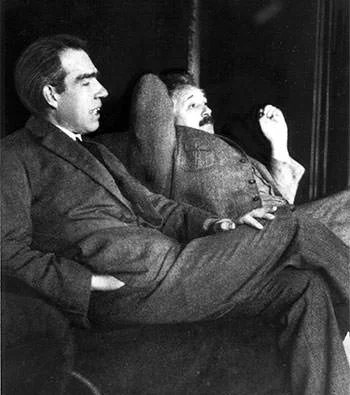
Niels Bohr (left) with Albert Einstein
#9 ALBERT EINSTEIN WAS AWARDED THE NOBEL PRIZE IN PHYSICS IN 1921
In 1921, Albert Einstein was awarded the Nobel Prize in Physics “for his services to theoretical physics and
especially for his discovery of the law of the photoelectric effect”. In 1925, he was awarded the Copley Medal
by the Royal Society, which is perhaps the oldest surviving scientific award in the world. Einstein received numerous
other awards and honors including Gold Medal of the Royal Astronomical Society in 1926, Matteucci Medal in 1921,
Max Planck Medal in 1929 and Franklin Medal in 1935. In 1999, Time magazine named Albert Einstein as the Person of
the Century.
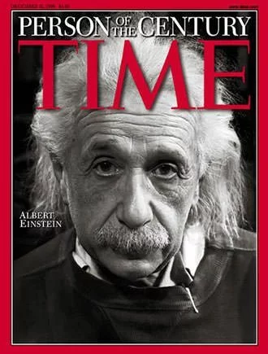
TIME Person of the Century – Albert Einstein
In 1921, Albert Einstein was awarded the Nobel Prize in Physics “for his services to theoretical physics and
especially for his discovery of the law of the photoelectric effect”. In 1925, he was awarded the Copley Medal
by the Royal Society, which is perhaps the oldest surviving scientific award in the world. Einstein received numerous
other awards and honors including Gold Medal of the Royal Astronomical Society in 1926, Matteucci Medal in 1921,
Max Planck Medal in 1929 and Franklin Medal in 1935. In 1999, Time magazine named Albert Einstein as the Person of
the Century.
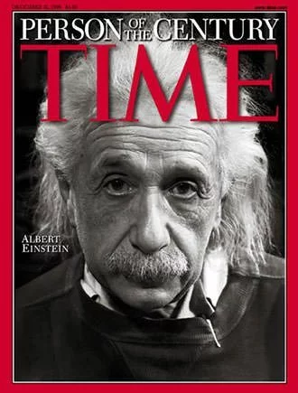
TIME Person of the Century – Albert Einstein
#10 HIS WORK HAD PROFOUND AND FAR REACHING IMPLICATIONS
Albert Einstein’s scientific theories accelerated the development of the world like never before and he
gave scientists the tools to mold almost every observable aspect of life as we live today. From nuclear
energy production to synchronization of GPS satellites to computers to many everyday consumer products;
all can be traced or linked to Einstein’s work. His impact is not just restricted to science it can be seen
in other fields like philosophy, visual arts and literature. Philosophical movement logical positivism,
art movement Cubism and numerous science fiction novels bear the imprint of Einstein. Albert Einstein changed
the world perhaps more than anyone has ever done in its history.
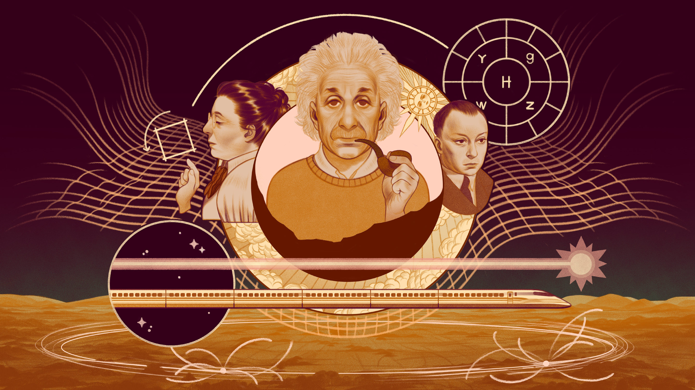
His work had profound and Far reaching implications
Albert Einstein’s scientific theories accelerated the development of the world like never before and he
gave scientists the tools to mold almost every observable aspect of life as we live today. From nuclear
energy production to synchronization of GPS satellites to computers to many everyday consumer products;
all can be traced or linked to Einstein’s work. His impact is not just restricted to science it can be seen
in other fields like philosophy, visual arts and literature. Philosophical movement logical positivism,
art movement Cubism and numerous science fiction novels bear the imprint of Einstein. Albert Einstein changed
the world perhaps more than anyone has ever done in its history.
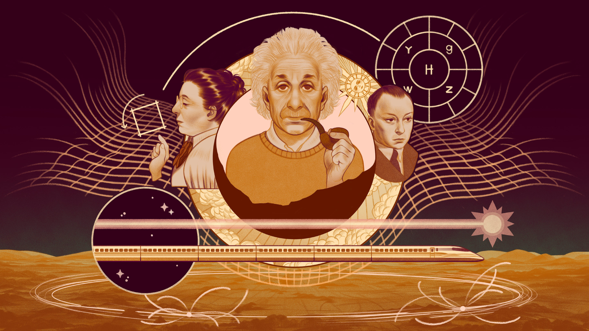
His work had profound and Far reaching implications
Name :